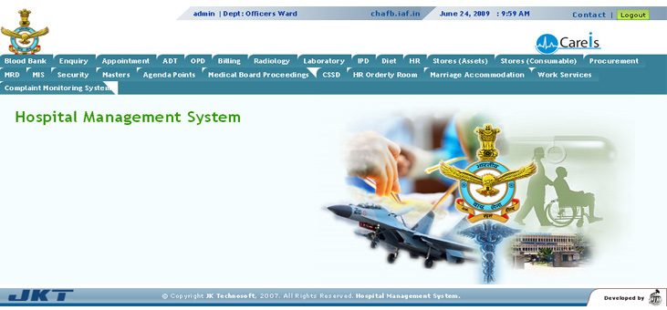

Hospital Management System
Command Hospital Air Force Bangalore
Command Hospital Air Force Bangalore is a Garrison hospital for defence personnel, ex-serviceman and their families, staying in and around Bangalore. Service patients from all the Armed Force hospitals of South India are referred here for specialist and super specialist treatment. In addition a large number of ex service men including ECHS beneficiaries and their dependents come to this hospital from Karnataka, Andhra Pradesh, TamilNadu, Kerala, and Andaman & Nicobar Islands for obtaining treatment or referral to empanelled facilities in civil.
